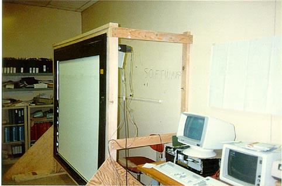

Xerox LiveBoard
A 67-inch rear-projection wall that turned a meeting room into a shared computer — and put a laser from a copier in the corner to track your pen.

Overview
The Xerox LiveBoard was a 67-inch rear-projection interactive display developed at Xerox PARC's Colab project between 1987 and 1990. Published at CHI 1992 with 12 co-authors, it represented the culmination of PARC's vision for computer-supported collaborative work. The LiveBoard used laser triangulation — with a rotating polygon mirror borrowed from Xerox copier technology — to track multiple cordless pens simultaneously on a wall-sized display. The system supported networked multi-user collaboration: up to 31 LiveBoards could be linked, with remote participants seeing and annotating the same shared workspace in real time. The board connected to a workstation running groupware like Cognoter and Boardnoter, and later Tivoli, a pen-gesture-driven electronic whiteboard application. Xerox spun off LiveWorks, Inc. in 1992 to commercialize the system; over 2,000 units were sold by 2000 at $49,500 each. The Computer History Museum holds a LiveBoard (model LB3, serial 3E1122X) in its permanent collection.
Deep dive
The LiveBoard was not a standalone product — it was the centerpiece of the Colab (Collaboration Laboratory), a custom-designed electronic meeting room at Xerox PARC completed in 1987. The room featured motorized desks, specially designed no-glare lighting, an 'electern' (electronic lectern with height-adjustable keyboard), and four networked Dorado workstations. The philosophy was total environmental design: every surface, every light, every piece of furniture was optimized for computer-supported group work. Mark Stefik wrote: 'We did not want to lose the emotional impact of a big whiteboard — something that you view from ten feet rather than ten inches.'
The LiveBoard's position sensing was brilliantly pragmatic. A laser with a rotating polygon mirror — literally cannibalized from Xerox's copier imaging systems — was mounted in the upper right corner of the board. Mirrors and retro-reflectors on two edges of the board reflected the sweeping laser beam. When a finger or pen touched the surface, it interrupted the beam, and the system triangulated the interruption's position. This was a 'skunkworks' build by a Xerox engineering team in Webster, New York — using their own company's copier parts to build a collaborative computer display. An alternative ultrasonic pen position detection system was also developed and patented (US 4,974,173 and 4,814,552).
The commercial LiveBoard launched May 18, 1993 at $49,500. It ran on an Intel 486 processor with Microsoft Windows, connected via Ethernet and telephone modems. Early adopters included Daimler-Benz, which used LiveBoards to share product designs between Pittsburgh and Ulm, Germany. By 2000, LiveWorks had sold over 2,000 units. The Tivoli software (Elin Rønby Pedersen, Kim McCall, Thomas P. Moran, Frank G. Halasz, 1993) brought pen gestures — scrubbing to erase, circling to select — to informal meeting whiteboarding, establishing interaction patterns that would influence tablet computing decades later.
Team & pioneers
- Mark Stefik. Principal Investigator, Colab concept and patents
- Scott Elrod. CHI 1992 lead author
- Rich Gold. CHI 1992 co-author, PARC artist and interaction designer
- Frank Halasz. CHI 1992 co-author, later Tivoli co-creator
- Elin Rønby Pedersen. CHI 1992 co-author, Tivoli software co-creator
- John Tang. CHI 1992 co-author, groupware researcher
- Daniel G. Bobrow. Colab co-PI, software architecture
- Lucy Suchman. Ethnographic studies of meetings at PARC
- Xerox Skunkworks (Webster, NY). Built the first physical LiveBoard prototype using copier laser parts
Media
Sources
- CHI 1992: Liveboard: A Large Interactive Display Supporting Group Meetings, Presentations, and Remote Collaboration
- Computer History Museum: LiveBoard catalog #102678840
- CHM Revolution Exhibit: LiveBoard
- Mark Stefik: Colab Electronic Meeting Room (historical photos and narrative)
- UPI: Xerox introduces LiveBoard (1993 launch coverage)
- The Independent: Chip chalks up new success (1994 UK launch)